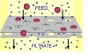

filtration

Definition: Filtration is a physical separation process that separates solid matter and fluid from a mixture using a filter medium that has a complex structure through which only the fluid can pass. Solid particles that cannot pass through the filter medium are described as oversize and the fluid that passes through is called the filtrate. Oversize particles may form a filter cake on top of the filter and may also block the filter lattice, preventing the fluid phase from crossing the filter, known as blinding. The size of the largest particles that can successfully pass through a filter is called the effective pore size of that filter. The separation of solid and fluid is imperfect; solids will be contaminated with some fluid and filtrate will contain fine particles (depending on the pore size, filter thickness and biological activity). Filtration occurs both in nature and in engineered systems; there are biological, geological, and industrial forms.
Source: Wikipedia
Wikipedia Page (Something wrong with this association? Let us know.)
Wikidata Page (Something wrong with this association? Let us know.)